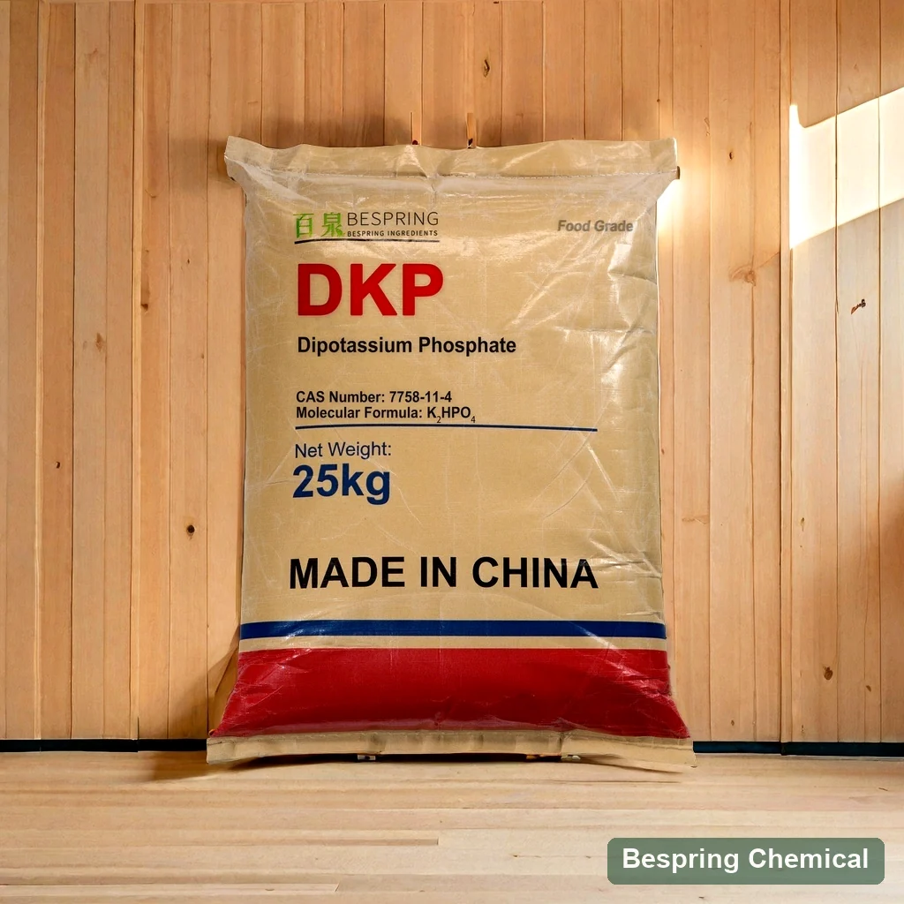
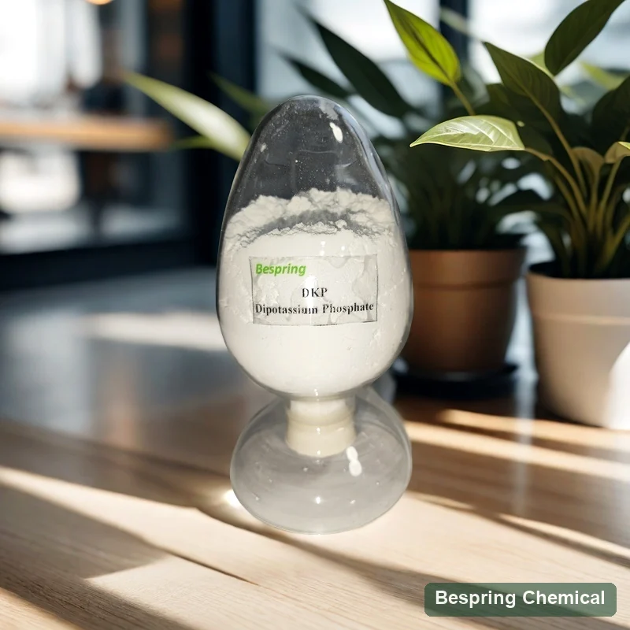
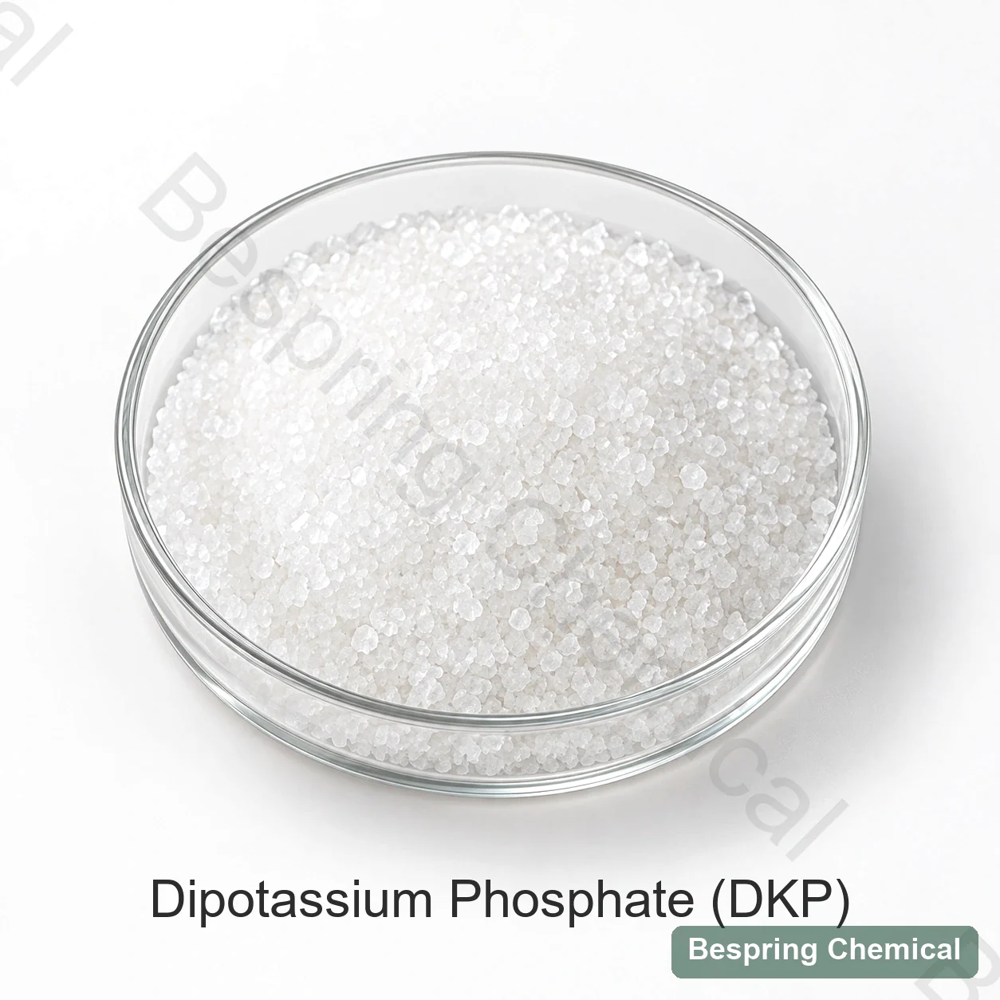
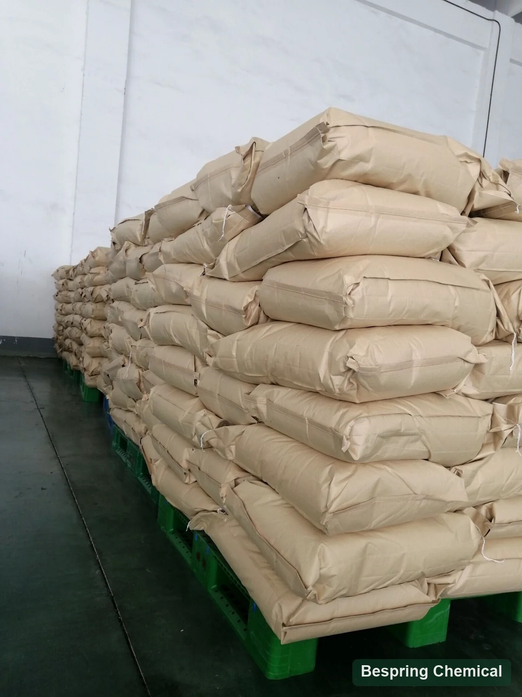

ความจุแบบบัฟเฟอร์
DKP สามารถป้องกันการเคลื่อนไหวของ PH ภายในหน้าต่างที่ต้องใช้สูตรวัดความเป็นกรด และ pH ผ่านกระบวนการประมวลผลและจัดเก็บได้ ไม่เฉพาะหลังการผสมครั้งแรกเท่านั้น
ฟอสเฟตสำหรับอาหาร · INS 340(ii) · DKP
ไดโพแทสเซียมไฮโดรเจนฟอสเฟต (K₂HPO₄) ละลายน้ำได้ ใช้ประเมินการปรับและรักษา pH หรือการจับไอออนโลหะในสูตร ตรวจรูปทางเคมี ฐานคำนวณปริมาณสาร และวิธีทดสอบก่อนเปรียบเทียบ

ภาพประกอบผลิตภัณฑ์ · ระบุเกรดและบรรจุภัณฑ์ในใบเสนอราคา
ยืนยันเกรด ปริมาณ บรรจุภัณฑ์ และเงื่อนไขส่งมอบในใบเสนอราคา
อัตลักษณ์ภาพK₂HPO₄ · CAS 7758-11-4
แก้ไขการอ้างอิง PH8.7-9.3; ยืนยันพื้นฐานการทดสอบ
การทบทวนค่าตะกั่วการค้า vs. JECFA จํากัด
ยืนยันเกรด ปริมาณ บรรจุภัณฑ์ และเงื่อนไขส่งมอบในใบเสนอราคา
บัตรประจําตัวและเกรดอาหาร
ไดโปเตสเซียมฟอสเฟต (dipoatassium phosphate) ที่เรียกว่า divotosum ไฮโดรเจนฟอสเฟต โพแทสเซียมไดบาซิ ซึม (dibastic popphosphate) คือ เค2HPO4หน้านี้บรรยายรูป anhydrus: CAS 7758-11-4, โมเลกุลน้ําหนัก 174.18 g/mol และ INS 340 (ii) / E340 (ii). ลายเซ็น JECFA DKP จง ระบุ ส่วน ประกอบ นี้; ฟอร์ม ที่ มี น้ํา หนัก ต้อง มี เอกลักษณ์ และ กําหนด ไว้ สําหรับ ตัว เอง.
JECFA (JECFA) พรรณนาการกินแบบไร้สีหรือขาว, คริสตัล หรือ มวลชน และบันทึกว่า DKP เป็นตัวแบ่งประเภท (DKP) รายการของสารบัฟเฟอร์, sequranget และ ยีสต์ (sequarent) ยืนยันความต้องการแบบผงหรือรูปร่างของอนุภาค และขนาดอนุภาค แทนการปฏิบัติต่อภาพอ้างอิงเป็นสัดส่วนการรับรอง ค่าอาหารต้องได้รับการสนับสนุนจากเอกสารระดับชั้นมัธยม ชื่อเดียวกันนี้ ไม่ได้ตั้งชุดของสารสนเทศหรือระดับปริญญาตรี (Schmultiple)
ส่วนประกอบบัฟเฟอร์ - ไม่ใช่การตั้งค่า PH สากล
Phypera acid/fase. ความเข้มข้น, เริ่ม pH และกรดอื่น ๆ กําหนดผลของสูตรที่สมบูรณ์. การอ้างอิง JEFA PH คือ 8.7-9.3 สําหรับคําตอบ 1 ใน 100: มันเป็นการทดสอบอัตลักษณ์หรือความเป็นเอกลักษณ์ของ pH ไม่ใช่ระยะการรับรองอาหารที่เสร็จ.
DKP สามารถป้องกันการเคลื่อนไหวของ PH ภายในหน้าต่างที่ต้องใช้สูตรวัดความเป็นกรด และ pH ผ่านกระบวนการประมวลผลและจัดเก็บได้ ไม่เฉพาะหลังการผสมครั้งแรกเท่านั้น
DKP จัดหาทั้งโพแทสเซียมและฟอสเฟต. คํานวณการให้องค์ประกอบจากสูตรที่ได้รับการรับรอง และสูตรรวม; อย่าอ้างอิงการเรียกร้องสารอาหารจากส่วนประกอบที่มีอยู่
ฟอสเฟตอาจเปลี่ยนแคลเซียมละลายและสมดุลแร่ธาตุอื่น ความกระด้าง เกลือเสริมแร่ธาตุ โปรตีน และความร้อนอาจเปลี่ยนความใส ตะกอน และเนื้อสัมผัส
เนื่องจาก DKP เป็นสารละลายน้ําและน้ําที่ลดต่ําได้อย่างอิสระ, คุณภาพน้ํา, การเพิ่มความชื้นแบบแห้ง, ความซื่อสัตย์แบบเส้น และการพ่นน้ําควรอยู่ในคลอง
เครื่อง ดื่ม ที่ มี โปรตีน ต้อง ใช้ ระบบ ตรวจ สอบ
Broffices อาจสนับสนุนการจัดการ pH และแร่ธาตุ ระหว่างกระบวนการประมวลผลระดับสูง แต่ DKP ไม่มีประโยชน์โดยอัตโนมัติ ในทุกเครื่องดื่มโปรตีน
บันทึก MPC/MCC, ไวน์ หรือโปรตีนพืช, องค์ประกอบแร่, ประวัติความร้อนและปริมาณอาหารที่ก่อนหน้า โปรตีนที่ยากจน อาจทําให้เกิดความไม่ขึ้น หรือการตั้งถิ่นฐานอิสระจาก DKP
DKP สามารถเปลี่ยนแปลง accin-miral equilibra; การปนเปื้อนที่มากเกินไปอาจเปลี่ยน viscosity หรือปลดปล่อยโปรตีนและแร่ธาตุจากหนู
เปรียบเทียบ ไม่ใช้ DKP และปรับเกรดเป็น DKP ควบคุมผ่าน HTT, UNT หรือ Retrort lection and shelp Life. ติดตามความสกปรก, การจับสเกล, ตะกอน, ความไว, สี, และแผ่น pH.
เครื่อง ดื่ม ที่ มี ความ มั่นคง ใน ทาง เทคนิค อาจ ยัง ไม่ ได้ รับ ความ รู้สึก หรือ ข้อ เรียก ร้อง ด้าน โภชนาการ.
ขอบเขตหลักฐาน: คือ 2024 วารสารวิทยาศาสตร์ดารี (ภาษาไทย: Dairy Science). เปรียบเทียบ DKP ที่0และ0.15% (มวล/มวลของเครื่องดื่ม) ในระบบ MCC/MPC ของเหลวสดที่มีโปรตีนนม7.5% DKP เพิ่มโปรตีนละลาย แคลเซียม และฟอสฟอรัส ขณะที่เครื่องดื่มเหล่านี้ยังคงทนความร้อนแม้ไม่เติม งานศึกษารวม HTST และ UHT แบบฉีดไอน้ำตรง รวมถึงเก็บเย็น ระดับทดลองนี้ไม่ใช่ปริมาณแนะนำ การอนุญาตทางกฎหมาย หรือหลักฐานว่าคงตัวในเครื่องดื่มนมหรือโปรตีนพืชทุกชนิด
การอ้างอิงและการทดสอบทางการค้า
ข้อจํากัดเชิงพาณิชย์เหล่านี้ถูกเก็บรักษาไว้จากแผ่นเบปรินซ์ DKP ที่มีอยู่ ซึ่งไม่มีการเรียงลําดับผลหรือพิสูจน์การปฏิบัติตามมาตรฐานที่เลือก การจํากัดความจุภาพนั้นๆ จะแสดงเป็นร้อยละ mg/k บนฐานมวล; ยืนยันการเตรียมการ, รายงานพื้นฐานและวิธีการสําหรับเกรดที่เสนอ
บน จอ เล็ก ๆ จง หยิบ เอา ตาราง มา อ่าน บันทึก การ ปรับ ปรุง.
ปัดหรือใช้แป้นพิมพ์เพื่ออ่านทุกคอลัมน์
| รายการทดสอบ | ค่าอ้างอิงเชิงพาณิชย์ | ฐานเปรียบเทียบและวิธีตรวจสอบ |
|---|---|---|
| ปริมาณ K₂HPO₄ | ≥98.0% | JECFA: ≥98.0% หลังทำให้แห้ง ตรวจวิธีและฐานคำนวณของเกรดที่เสนอ |
| P₂O₅ | 39–42% | คำนวณเป็น P₂O₅ ตรวจฐานก่อนหรือหลังทำให้แห้งและวิธีวิเคราะห์ |
| pH | 8.7–9.3 | JECFA ใช้สารละลาย 1 ส่วนใน 100 ส่วน ตรวจความเข้มข้นและอุณหภูมิ |
| การสูญเสียน้ำหนักเมื่อทำให้แห้ง | ≤2.0% ที่ 105°C | JECFA: ≤5% ที่ 105°C เป็นเวลา 4 ชั่วโมง ตรวจระยะเวลาทดสอบของข้อกำหนดเชิงพาณิชย์ |
| สารที่ไม่ละลายในน้ำ | ≤0.1% | JECFA: ≤0.2% ตรวจวิธีวัดและฐานคำนวณ |
| ฟลูออไรด์ (คำนวณเป็น F) | ≤10 mg/kg | ตรวจวิธีทดสอบและผลของล็อตที่เสนอ |
| สารหนู (As) | ≤3 mg/kg | ตรวจผลทดสอบเฉพาะธาตุ |
| ตะกั่ว (Pb) | ≤5 mg/kg | ข้อกำหนด JECFA ที่อ้างถึงกำหนด ≤4 mg/kg ตรวจข้อกำหนดของเกรดที่จะซื้อและ COA ของล็อตจริง |
| โลหะหนัก (คำนวณเป็น Pb) | ≤20 mg/kg | ค่ากลุ่มโลหะหนัก ตรวจผลของแต่ละธาตุแยกต่างหากเมื่อมีข้อกำหนด |
| แคดเมียมและปรอท | ≤1 mg/kg ต่อธาตุ | ค่าอ้างอิงเชิงพาณิชย์ ตรวจวิธีและผลทดสอบของแต่ละธาตุ |
ค่าตะกั่วอ้างอิงเชิงพาณิชย์ ≤5 mg/kg ขณะที่ JECFA ที่อ้างถึงกำหนด ≤4 mg/kg ให้ตรวจข้อกำหนดและ COA ของเกรดและล็อตที่จะซื้อ
มาตรฐาน อาจ แตก ต่าง กัน. 2012 ต้นฉบับ EU E340 (ii) ข้อความที่กําหนด ให้ P₂O₅ ที่40.3–41.5% บนฐานปราศจากน้ำ และสารหนูกับตะกั่วชนิดละ ≤1 mg/kg ค่าจำกัดเหล่านี้แคบกว่าข้อมูลทางการค้า P₂O₅ สารหนู และตะกั่วด้านบน เป็นการเปรียบเทียบเฉพาะฉบับ ต้องยืนยันข้อความรวมที่ใช้ปัจจุบันและเงื่อนไขหมวดอาหารก่อนอนุมัติจัดหาสำหรับ EU
การอ้างอิงแบบฉบับเดียวนี้ให้อัตลักษณ์และความต้องการบริสุทธิ์ รวมถึงการกล่าวหลังจากแห้งและข้อจํากัดของธาตุ ซึ่งตามที่กล่าวมานี้ใช้การแยกส่วนกรด-เบสของตัวอย่างที่แห้งไป
เปิดเอกสารร่าง DKPรายการรายการรายการของ FDA ระบุ DKP และรายการที่ลดเกลือ, เสริมอาหาร, ระบบควบคุม pH, sequerent and steper/thickener ผลกระทบ
ทบทวนรายการ FDAสําหรับการใช้อาหารของสหรัฐฯ 21 CFR 182.6285 ยอมรับไดโพแทสเซียมฟอสเฟตว่าปลอดภัยเมื่อใช้ตามหลักเกณฑ์การผลิตที่ดี นี่ไม่ใช่การอนุมัติผลิตภัณฑ์หรืออนุญาตสำหรับอาหารทุกชนิดและทุกตลาด ต้องประเมินหน้าที่ทางเทคนิค ความบริสุทธิ์ส่วนประกอบ และการใช้ที่อนุญาตแยกกัน
เลือกโดยสมดุลกรด/ เบส และ ซีออน
orthhophosphates value ไม่ใช้ส่วนทดแทนที่เท่ากันกับน้ําหนักเท่ากัน. เปรียบเทียบองค์ประกอบโมลาร์, วิธีแก้ pH, deffroffy , passia/sosodium, และอัตลักษณ์ทางกฎหมาย.
KH2PO4ลองพิจารณาคู่กรด ในสารบัฟเฟอร์โพแทสเฟต
K2HPO4น้ํายาฟอกเลือด โพแทสเซียม/ฟอสเฟต และความตั้งใจควบคุมแร่
K3PO4การมองเห็นสูงนั้น ต้องแยก pH และ การจับความรู้สึกออกจากกัน
Na2HPO4เปรียบเทียบการให้โซเดียมกับโปแตสเซียม และการแสดงบัฟเฟอร์ของจริง
อนุมัติแบบ Bench-toline
ระบุ K₂HPO₄ ปราศจากน้ำเกรดอาหาร CAS7758-11-4 ปลายทาง หมวดอาหาร และมาตรฐานที่เลือก
ยืนยันพื้นฐานที่กล่าวมา, ระดับความเข้มข้นของ pH, วิธีความชื้น, ในความผันผวน และข้อจํากัดของธาตุ
วัดการตอบสนองของ pH และค่าความเป็นกรดในสูตรที่สมบูรณ์ ไม่เฉพาะน้ํา
เปรียบเทียบไม่มี DKP และเกรด DKP ที่ตรงกับการผสม, ความร้อนและห้องเก็บของ
ความเสถียรของโปรตีนติดตาม ตะกอน ความหลากหลายของแร่ธาตุ สมดุลของแร่ธาตุ รสนิยม สี และโภชนาการ
ร้องขอ TDS, SDS, SCOA และ COA จํานวนมาก เพื่อต่อต้านการรับรอง ได้รับการยืนยันรูปแบบของอนุภาค, จัดเก็บ, จัดเก็บ และจัดเก็บ หากจําเป็น ต้องตรวจสอบสิทธิ์ในการตรวจสอบและขอบเขตสําหรับเว็บไซต์ที่เสนอชื่อ และที่เกี่ยวข้อง
อ้างอิงรูปลักษณ์และจัดเก็บ
เก็บในภาชนะปิดสนิท ณ ที่แห้งและระบายอากาศได้ หลีกเลี่ยงแดด ความร้อน และความชื้น เอกสารอ้างอิงระบุอุณหภูมิไม่เกิน 30°C ตรวจสภาวะการเก็บและวิธีปฏิบัติหลังเปิดภาชนะใน SDS ของเกรดที่เสนอ



คำถามที่พบบ่อย
ค่าอ้างอิงตะกั่วเชิงพาณิชย์ ≤5 mg/kg และเกณฑ์ JECFA ที่อ้างถึง ≤4 mg/kg ให้ใช้ข้อกำหนดของเกรดที่เสนอและ COA ของล็อตเพื่อตรวจเกณฑ์ที่ต้องการ
วัด pH ในสูตรจริงหลังผสมและผ่านกระบวนการที่ใช้ เปรียบเทียบผลที่ความเข้มข้น อุณหภูมิ และวิธีวัดเดียวกัน
เทียบรูปทางเคมี ปริมาณโพแทสเซียมและฟอสฟอรัส รวมทั้งการเปลี่ยน pH ในสูตรจริง ดู MKP สำหรับอาหาร
ทําการตั้งสูตรต่อไป
Retrieved pH, แร่ธาตุ, ความชัดเจน, โปรตีน, การรักษาความร้อนและเป้าหมายการรับรู้ ดู มัคคุเทศก์ของฟอสเฟต และฟอสเฟตของพืช เพื่อวางแผนการทดลอง
เชื่อมต่อตัวเลือกฟอสเฟตกับแคลเซียม, เคนิน, ความร้อน, ตัดและเย็น
จําแนกส่วน ผสมที่นิยามได้ ซึ่งช่วงของสารบัฟเฟอร์และแร่ธาตุต้องสมดุล
เปรี้ยวจัดสูตร
ขอเอกสารอ้างอิงและเอกสารเกรดที่เสนอให้ แบ่งปันมาตรฐานอาหารเป้าหมาย, โครงสร้างบัฟเฟอร์และกระบวนการ เพื่อให้สามารถทบทวนเกรดกับข้อกําหนดและสูตรของคุณ
หากใช้แบบฟอร์มไม่ได้ โปรดใช้หน้าติดต่อ หรือส่งอีเมลถึงฝ่ายขาย.
บอกเราถึงตลาดเกรดและปลายทางของคุณ เราจะได้ยืนยันได้ว่าเอกสารไหน ที่สั่งได้
การอ้างอิงภายนอกไม่ใช่ใบรับรองชุดหรือค่าผลิตภัณฑ์ของเบสปริง